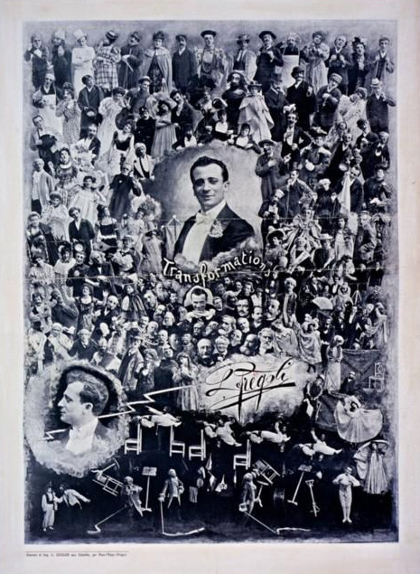

Namesake
Fregoli is named after a man who could be an entire theatre company all by himself.


Leopoldo Fregoli was born in Rome on 2 July 1867 and died in Viareggio on 26 November 1936. He was a quick-change artist, a trasformista in Italian, and so completely the model of one that his rapid-fire stage chameleonism gave the language a word of its own: fregolismo.
It began in the army. Posted to Massawa on the Red Sea in 1889, he was asked by General Baldissera to put on shows for the officers’ club. There were few amateur actors and no actresses at all, so Fregoli took the parts himself. In one short sketch he played all four roles, He, She, the Other Man and the Servant, switching costumes at speed. The shortage of cast became the act.
Back in Italy, and then on tours through Europe and the Americas, he built whole evenings around a single performer: Eldorado, billed with some sixty transformations, and Camaleonte (“Chameleon”), with which he reached the peak of his art. He could speak and sing in five different voices. In 1897 he played the Alhambra in London, and in January 1900 his international career reached its summit at the Trianon in Paris. The one-man show did have a crew, though: five or six assistants worked in the wings on make-up, costumes and masks, and a longtime partner and look-alike, Romolo Crescenzi, stood in as his double. After some ten thousand performances he left the stage in the 1920s, still at the height of his popularity.
He was an early adopter, too. After meeting the Lumière brothers in Lyon he obtained a projector and the right to show their films, and soon began shooting his own short comedies with himself in every part. He called the whole affair the Fregoligraph and projected it at the end of his shows on a screen of four by three metres framed with coloured light bulbs, roughly from 1898 to 1905. One of those films, Fregoli dietro le quinte (Fregoli behind the scenes), gave away how his changes were done.
He even dictated his own epitaph: “Qui Leopoldo Fregoli compì l’ultima sua trasformazione”, here Leopoldo Fregoli made his last transformation.
His name also lives on in psychiatry. In 1927 P. Courbon and G. Fail described a woman who believed that two actors she had seen at the theatre were pursuing her, disguised as people she knew. The rare belief that different people are really one person in disguise has been called the Fregoli delusion ever since. The project’s spec lists it, firmly, as a “nearby term we are not”.
Why the name fits: the spec puts it in one line, one performer, many appearances, no restart of the show. Fregoli the app is a single Node process that stays up while its appearance changes. Capabilities are Cordis plugins, mounted and unmounted at runtime like costumes. The welcome canvas is simply the first costume of the evening, and even the assistant in the corner can be swapped or sent off. Like the crew in the wings, the loader makes sure nothing half-dressed walks on stage: a plugin whose setup fails never becomes active and never replaces the canvas. And unlike in the delusion, here it really is one performer behind every face.
Sources: Leopoldo Fregoli (Wikipedia) · Fregoli, Leopoldo, Dizionario Biografico degli Italiani (Treccani) · Leopoldo Fregoli, Portale Cinema Muto Italiano · Fregoli delusion (Wikipedia)